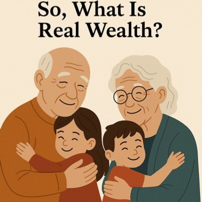
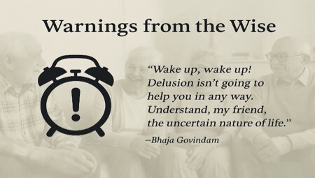
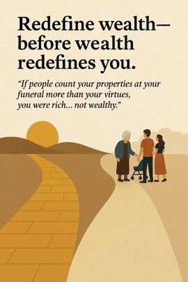
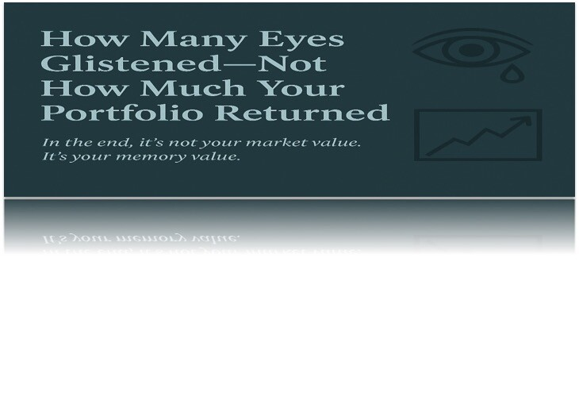

Until my father’s peaceful demise, I thought I understood what wealth meant. I thought it was about leaving behind something substantial—bank balances, properties, maybe even a family business with clean books and a proud surname. But that day, something shifted.
At his funeral, it wasn’t the value of his assets that comforted me. It was the tears in the eyes of old friends. The shared silences of relatives and close friends. The warmth of grandchildren. The embraces of those who didn’t just attend the ceremony, but belonged to his life.
That’s when it hit me—real wealth is not what you store in lockers, but what lingers in hearts.
A Different Retirement Plan
In a world that obsesses over IRAs and 401(k)s, we’ve overlooked the most important retirement account—the one that holds love, respect, loyalty, and shared memories.
But go visit any modern-day “retirement home” in India, and you’ll see the bankruptcy of this human account. I did. I met faces too proud to say they’re abandoned, too polite to ask for a hug, and too seasoned to curse their fate. But their eyes shimmered with joy just because we visited. No dividends, no equity—just a moment of presence.
How poor are we becoming, despite all our riches?
The Scriptures Already Warned Us
Bhaja Govindam says it bluntly:
गृहो वाति गॄप्ताः किमसारः
“What good is a house full of possessions if it is devoid of love and permanence?”
And again, Sankara reminds:
बालस्तावत् क्रीडासक्तः।
तरुणस्तावत् तरुणीसक्तः।
वृद्धस्तावत् चिन्तासक्तः।
परमे ब्रह्मणि कोऽपि न सक्तः॥
“The child is absorbed in play, the youth in love, the old in worry—
but no one is absorbed in the Supreme.”
Even in our final stage, we often worry about wills, not well-being. About properties, not people.
The Bhagavad Gita echoes the same impermanence:
अनित्यमसुखं लोकम् इमं प्राप्य भजस्व माम्। (Gita 9.33)
“Having attained this impermanent and joyless world, seek refuge in Me.”
न हि प्रहर्षं सम्भवति स्थिरबुद्धेः। (Gita 2.15)
“A person of steady wisdom is neither elated by gain nor dejected by loss.”
Yet here we are—measuring life in square feet and carats, ignoring the fact that the only thing we truly take with us is the karma we leave behind and the love we’ve nurtured.
True Wealth, Then, Is This:
• The grandchild who hugs you, not out of obligation, but affection.
• The friend who shows up not with flowers for your funeral, but with food when you’re sick.
• The spouse who sits in silence with you because words are no longer needed.
• The community that remembers you not for your portfolio, but your presence.
Let us grow relationships that will outlive our riches.
The Forgotten Seniors
“I met them in India… in Senior Citizen Homes ”
• Elders abandoned by their own families.
• Faces too proud to beg, hearts desperate for affection.
• One visit—just being there—sparked joy in their eyes.
Real wealth is presence, not presents.
In Closing: A Simple Test
At your funeral, if people are counting your properties more than your virtues, you may have been rich, but not wealthy.
Let us redefine wealth before wealth redefines us.
